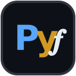

Python Foundations
An interactive beginner course — from zero to five real programs.
100 runnable boxes · console · 6 quizzes · 19 exercises · 5 projects
print()→ variables → loops → lists/dicts → functions → classes → files & errors- Predict-then-Run habit, 🐞 crash labs, hidden solutions with hints
- Build: guessing game, to-do manager, calculator, text adventure, journal capstone